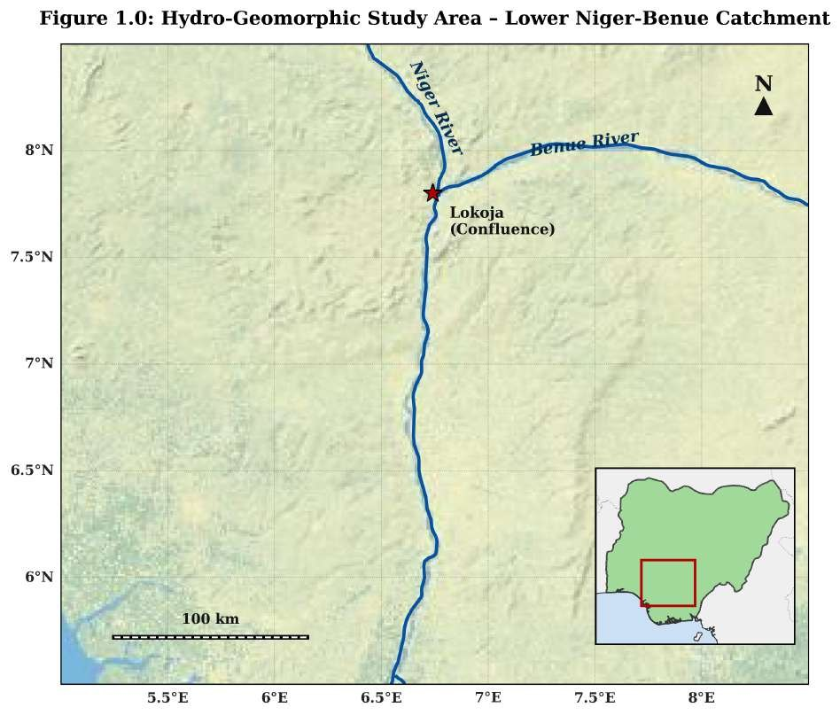
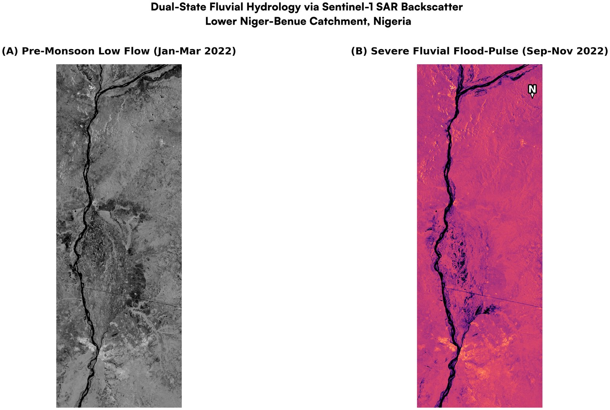
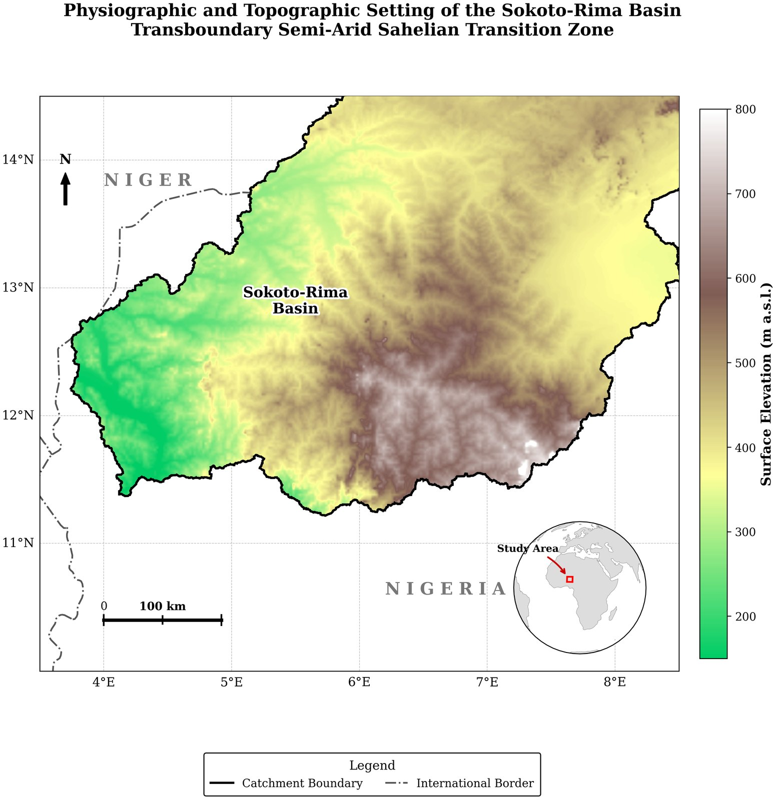
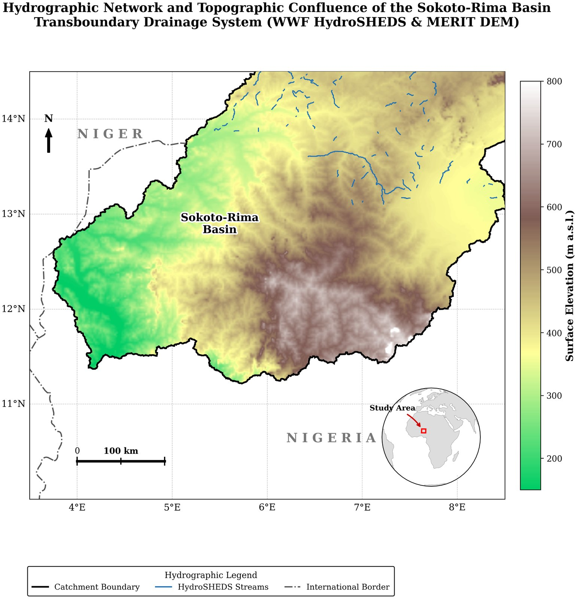
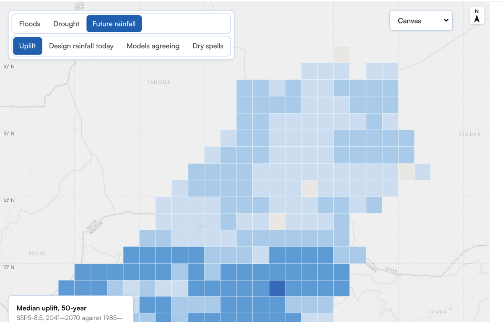

Hydrological extremes where the gauges are missing
Floods on the Lower Niger–Benue, drought in the Sokoto–Rima basin, and the design rainfall of 2041–2070.
What can free satellite records and climate models say about hydrological extremes in river basins with almost no ground measurements, and how sure can we be?
Floods, droughts and the rainfall that drains and dams must carry are usually read from rain and river gauges. In much of Nigeria those records are short, broken or not public: no gauge with a usable daily record after 1980 was found in either study area. This study asks what open satellite data and climate models can establish instead, in two river systems that share no water, and tests each answer against an independent source wherever one exists.
Objectives
- Map when and where the Lower Niger–Benue floods from radar, and measure how much of the radar's water an independent optical sensor confirms.
- Characterise meteorological drought in the Sokoto–Rima basin at several timescales, test it against an independent rainfall and soil-moisture record, and test whether vegetation follows rainfall once shared trends are removed.
- Estimate how 23 climate models change the daily rainfall and dry spells used in design by 2041–2070, and break the uncertainty of that change into its sources.
1One question, three tests
The three parts are separate studies with a shared method: use the open record that best observes each extreme, check it against a second, independent source, and report what the check allows. They do not form one connected water balance; the Lower Niger–Benue reach and the Sokoto–Rima basin are about 360 km apart at the nearest point and share no water. What connects them is the question of how far satellite and model evidence can stand in for missing gauges, and the engineering use of the answer.
2Study areas
The Lower Niger–Benue reach runs about 220 km in a straight line from the Niger–Benue confluence at Lokoja south to 5.8° N (the study box is — km², 6.50–7.30° E, 5.80–8.00° N). It is a river corridor whose floods come from rain far upstream, but whose drains and road crossings are sized by the rain that falls on it. The Sokoto–Rima basin (— km², HydroBASINS level 4; Lehner & Grill, 2013) spans north-west Nigeria and south-central Niger, from Sudanian savanna in the south to the Sahel in the north, with a single rainy season that brings — of the year's rain between May and October.
3Seeing floods through cloud
Calm water reflects radar away from the satellite, so flooded ground looks dark in Sentinel-1 images whatever the cloud (Torres et al., 2012). Every Sentinel-1 image of the reach from 2018 to 2023, — scene passes in all, was put on a 110 m grid and called water where its backscatter fell below a threshold on slopes under 5°. The question is less "where is the water" than "how much of what the radar calls water is water", so the radar was checked against Sentinel-2, an optical satellite that shares nothing with it.
When and how far does the reach flood, and how much of the radar's water does an independent sensor confirm?


3.1Three ways to measure the flood, one answer on timing
Counting every dark cell, the radar's "water" would be largest in the dry season, which is impossible for this river: bare, dry and burnt ground reflects as little radar as water does. Three ways around this give the same timing and different sizes (Plate A·4). Counting water only inside the floodplain JRC has mapped since 1984 (Pekel et al., 2016) gives a rise from about — to — km² in October. Requiring both radar polarisations to agree removes much of the dry-season ground across the whole reach, giving — km² in October. Change detection, water that was not water in the same year's dry season, gives a flood extension of — km² in October and needs no JRC data at all, following the multi-temporal change-detection approach of Clement et al. (2018).
3.2Is the threshold the problem?
The original analysis fixed the VH threshold at −18 dB. Otsu's method (Otsu, 1979), applied each month to cells near known water where the histogram holds both classes (Martinis et al., 2015), finds —: the fixed value was reasonable. Moving the threshold changes the false water on dry ground far more than the floodplain water, so the dry-season error comes from the surface itself, not from an unlucky threshold choice.
3.3What an independent sensor confirms
Sentinel-2 water (MNDWI above 0 on cloud- and shadow-free pixels) was compared with radar water for February 2022, the dry season, and for late October to November 2022, the flood. Sentinel-2 cannot see through cloud or under vegetation, so it is an independent check, not ground truth. In the flood season the dual-polarisation radar water is — confirmed and finds — of the optical water. In the dry season most radar water is not confirmed, and none of it outside the floodplain is (Plate A·5). VV separates dry ground from water better than VH: in February the two polarisations overlap by —, in October by —.
4Rain deficits and greenness
Drought here means meteorological drought: a shortfall of rain against the 1991–2020 normal, measured with the Standardized Precipitation Index (McKee et al., 1993) from CHIRPS (Funk et al., 2015). Soil-moisture (agricultural) drought is looked at through TerraClimate (Abatzoglou et al., 2018), and vegetation through MODIS NDVI. Hydrological drought, in rivers and aquifers, would need flow records that are not available.
How often, how long and how severe are droughts, do two independent records agree on them, and does vegetation follow?


4.1One rainy season, and how far it varies
The basin receives — mm a year on average, — of it from May to October and almost none from November to March (Plate B·2). Annual totals vary by —% from year to year and have risen by — mm per decade since 1981 (least-squares slope; Mann–Kendall τ = —, p = —), the recovery from the droughts of the 1970s and 1980s (Nicholson, 2013).
4.2Drought at three timescales
SPI-3 follows the rainy season month by month, the scale that matters for crops; SPI-12 follows the water year. Each was fitted month by month with a gamma distribution, with dry months handled separately; where three months normally bring under 10 mm, as in January to April, SPI-3 is not defined and is left empty rather than forced onto trace amounts. Drought events are counted by run theory (Yevjevich, 1967): on SPI-12 the basin had — drought events since 1981, the longest lasting — months; the 1980s stand out at every timescale (Plate B·3).
4.3A second record: where it agrees and where it does not
TerraClimate builds its rainfall from different inputs (CRU TS and JRA-55), so it can test the CHIRPS drought years. The two agree closely on annual rainfall (r = —) and on SPI-12 (r = —). Both mark — as drought years. Beyond those they part: CHIRPS alone marks —, TerraClimate alone —. Recent single drought years in this basin therefore depend on the dataset and should not be quoted from one. Soil moisture, which also depends on temperature and evaporation, picks out yet other years (—), the gap between meteorological and agricultural drought (Plate B·6).
4.4Does vegetation follow the rain?
Growing-season greenness (MODIS NDVI, July–October, quality-screened) and annual rainfall both rise from 2001 to 2024, and a shared trend alone can produce a correlation (Dardel et al., 2014). With each trend removed the basin-wide correlation is r = —, and on year-to-year differences —: in wetter years the basin is greener. Cell by cell the detrended link is significant (p < 0.05) in — of the basin and is strongest where rain is scarcest (Plate B·8): water-limited vegetation responds most. Last year's rain adds nothing (r = —).
5Design rainfall, 2041–2070
Drains, culverts and small dams are sized for the daily rainfall expected once in 25, 50 or 100 years. Part C asks how much 23 downscaled climate models from NEX-GDDP-CMIP6 (Thrasher et al., 2022) change those values, and the longest dry spell of the Sokoto–Rima rainy season, by 2041–2070 under SSP2-4.5 and SSP5-8.5. For each 0.25° cell, the wettest day of each year was fitted with a generalised extreme-value (GEV) distribution, using L-moments (Hosking, 1990). The uplift factor is a model's future value divided by its own past value, so much of each model's bias cancels.
How much do the models raise design rainfall, and what limits that answer?
| Data | Role | Years |
|---|---|---|
| CHIRPS v2.0 daily, 0.25° (Funk et al., 2015) | Present-day extremes; reference for the models | 1985–2014 |
| NEX-GDDP-CMIP6, 23 models, 0.25° | Historical and SSP2-4.5 / SSP5-8.5 daily rainfall | 1950–2014, 2041–2070 |
| GHCN-Daily, Birni N'Konni and Maradi (Menne et al., 2012) | Independent point check, Sokoto–Rima | 1950–1980 |
5.1How well do the models match today's rainfall?
NEX-GDDP-CMIP6 is bias-corrected toward an observational dataset over the historical period, so agreement with CHIRPS measures consistency, not independent skill. The models reproduce the seasonal cycle almost exactly (median r = —) but not the extremes: their 25-year rainfall is — times CHIRPS's on the Lower Niger–Benue and — times in the Sokoto–Rima basin, where the two gauges give still higher values (models — times the gauges, 1950–1980). The references disagree by tens of percent, which is why the change is taken within each model (Plate C·1).
5.2How far 30 years can reach
A GEV fitted to 30 annual maxima is well constrained at the 2- to 10-year return periods and loose beyond 50 years (Plate C·2). The sample L-moment ratios scatter around the GEV curve about as much as 30-year samples should, so the distribution fits; their shape is close to the Gumbel case, and fitting a Gumbel instead changes the uplift by about 9 points at 50 years and 17 points at 100 years in the Sokoto–Rima basin. The 100-year values below are extrapolations and are best read as indicative.
5.3How much design rainfall changes
By 2041–2070 the median 50-year uplift is — (SSP2-4.5) and — (SSP5-8.5) on the Lower Niger–Benue, and — and — in the Sokoto–Rima basin (Plate C·3). Several models share an atmosphere model, so the ensemble over-represents some families (Kuma et al., 2023); weighting each family equally gives — under SSP5-8.5. The plain average of each year's wettest day, which needs no curve fitting, rises under SSP5-8.5 by a median — and —, while annual rainfall changes by — and —: the heaviest days grow faster than the year's total, by more than the roughly 7% per °C a warmer atmosphere can hold (the warming itself is not measured here) (Trenberth et al., 2003). Whether the extra comes from the models or from the statistical downscaling was not tested.
5.4What the uncertainty is made of
The spread of the uplift was split into four sources (Plate C·6), a simplified form of the partition of Hawkins & Sutton (2009): sampling (re-drawing the 30 years of each period), the models, the scenario, and the choice of distribution. For the 50-year value, sampling accounts for — on the Lower Niger–Benue and — in the Sokoto–Rima basin; the models for — and —. Longer records, or pooling records regionally, would narrow the range more than adding models. The shares leave out downscaling and observational uncertainty, so the true uncertainty is larger.
5.5Design values, and why they are uncertain before any climate change
Table C·2 applies the uplift to today's CHIRPS values. Two cautions come first. CHIRPS understates heavy days: the two gauges' typical (median) wettest day of the year was — mm in 1950–1980, against — mm for a typical Sokoto–Rima CHIRPS cell in 1985–2014, partly because a 0.25° cell averages rain over about 750 km². And the baseline window matters: with 1995–2024 instead of 1985–2014, today's 50-year rainfall on the Lower Niger–Benue is — higher. The uplift factors, being ratios, are the more useful output; they should be applied to a gauge-based value where one exists.
| Study area | Return period | 1985–2014 | 1995–2024 | SSP2-4.5 | SSP5-8.5 |
|---|
5.6Dry spells in the Sokoto–Rima rainy season
The models change the longest June–September dry spell of a typical year by a median — days and of a 1-in-10 dry year by — days under SSP5-8.5, with 5–95% ranges that include both lengthening and shortening (Plates C·7 and C·8). The models also run — days longer than CHIRPS in the historical period. There is no robust projected change in rainy-season dry spells.
6What the three parts show together
Independent checks change the answer. Without Sentinel-2, the radar would have reported the largest "floods" in the dry season; without TerraClimate, recent drought years would have been quoted from one dataset; without the gauges, today's design rainfall would look settled. In each part the check did not only confirm or refute: it showed where the record can be used and where it cannot.
Timing is robust, magnitude is not. Every flood method, except the whole-reach dual-polarisation count, shows the reach flooding in —; their October areas differ by about 1.7 times. Both rainfall records place the great droughts in the 1980s; they disagree on single recent years. The models agree on the direction of change in extreme rainfall; its size spans a wide range.
Short records are the binding constraint. Thirty-year samples dominate the uncertainty of design rainfall, six years of radar cannot give flood frequencies, and the only daily gauges end in 1980. For engineering use the most valuable addition would be access to Nigeria's own station records, not another model run.
| Part | Can establish | Cannot establish |
|---|---|---|
| A · Floods | Flood timing; flood-season water extent with stated precision against Sentinel-2 | Dry-season water; flood depth, discharge or return periods; flood risk (no exposure data) |
| B · Drought | Meteorological drought history and its 1980s peak; that vegetation follows rainfall year to year | Single recent drought years from one dataset; hydrological (river or groundwater) drought; causation of greening |
| C · Future rainfall | The direction and approximate size of change in daily extremes, with its uncertainty and its sources | Absolute design values without gauges; sub-daily intensities; discharge for spillways and bridges |
7Key terms
- Gauge
- A station that measures rainfall or river level. Few usable ones exist in these areas, which is the problem this study addresses.
- Sentinel-1
- A European radar satellite. Radar sees through cloud, so it can map floods during the rainy season.
- Sentinel-2
- A European optical satellite. It sees ground colour but not through cloud, so it serves as an independent check.
- CHIRPS
- A rainfall dataset on a 0.25° grid from 1981 onward, combining satellite estimates with station records.
- TerraClimate
- A global monthly climate dataset with rainfall, soil moisture and evaporation. Here it is a second rainfall record.
- SPI (Standardized Precipitation Index)
- Rainfall over a period compared with the normal for that place, as a standard score. Values below −1 count as drought here.
- NDVI
- A greenness index from satellite images. Higher values mean more leaf cover.
- Return period
- The average interval between events of a given size. A 50-year rainfall is exceeded on average once every 50 years.
- GEV (generalised extreme-value distribution)
- A curve fitted to each year's largest daily rainfall, used to estimate rainfall for each return period.
- L-moments
- Statistics that summarise the spread and shape of a sample. Here they are used to fit the GEV curve.
- Bootstrap
- A resampling method that redraws the data many times to see how much an estimate would vary.
- Uplift factor
- A model's future design rainfall divided by its own past value. An uplift of 1.2 means 20% more rain for the same return period.
7Methods in brief
All results come from scripts in the repository that read open data and write the files this page reads; none is typed in, and re-running every script reproduces them exactly. Data were read from Microsoft Planetary Computer, the Climate Hazards Center, NASA's NEX-GDDP-CMIP6 bucket and NOAA's GHCN-Daily, without Earth Engine.
| Part | Data | Method | Check |
|---|---|---|---|
| A | Sentinel-1 RTC VH and VV, 2018–2023, 110 m; Copernicus DEM; JRC GSW v1.3 | Threshold (−18 dB; Otsu), dual polarisation, floodplain mask, change detection | Sentinel-2 MNDWI, 2022; threshold sensitivity |
| B | CHIRPS v2.0 daily 0.25°, 1981–2024; MODIS MOD13Q1; TerraClimate | Gamma SPI-3/6/12; run theory; detrended correlation | TerraClimate rainfall and soil moisture; gamma goodness of fit |
| C | NEX-GDDP-CMIP6, 23 models; CHIRPS; GHCN-Daily | GEV by L-moments per cell; uplift ratios; bootstrap; variance partition | Gauges 1950–1980; null test; Gumbel and family-weighted ensembles; baselines |
8Limits and uncertainty
| Source | Effect | Treatment |
|---|---|---|
| No ground truth for floods | Flood areas are satellite estimates | Checked against Sentinel-2, itself limited by cloud and vegetation |
| Dark dry ground in radar | Large false water in the dry season | Floodplain mask, dual polarisation, change detection; dry-season water not reported |
| JRC used as mask and as reference | The floodplain curve cannot exceed JRC's mapped extent | Stated; change detection and Sentinel-2 checks use no JRC data |
| Rainfall dataset choice | Recent drought years differ between CHIRPS and TerraClimate | Both shown; single recent years not quoted from one dataset |
| 30-year samples | Largest share of design-rainfall uncertainty; 100-year values extrapolated | Bootstrap intervals, null test, return-level plots |
| Model dependence and downscaling | Ensemble may over-weight some families; extremes may be inflated | Family-weighted median shown; downscaling not tested, stated |
| CHIRPS understates heavy days | Today's design values too low | Uplift factors emphasised; gauge contrast shown |
| Daily rainfall only, no discharge | No sub-daily curves or flow design | Stated; outputs limited to daily rainfall |
9Conclusion
Open satellite records and climate models can say a good deal about hydrological extremes where gauges are missing, provided each is checked against something independent. Radar shows when the Lower Niger–Benue floods and how far in the flood season, but not in the dry season. Two rainfall records agree on the great droughts of the 1980s and disagree on recent single years, and vegetation in the Sokoto–Rima basin tracks each year's rain. Climate models raise design rainfall in both areas, by a median — for the 50-year day under SSP5-8.5, with a range set mainly by how short the records are. The weakest link is the present, not the future.

Interactive explorer Every cell, every model, every year Switch between flood, drought and design-rainfall layers, step through the years, select any cell for its full record, and compare the 23 models side by side. Open the explorerData, code and citation
- a.jsonPart A results: monthly areas, thresholds, Sentinel-2 checks, sections
- b.jsonPart B results: SPI, events, TerraClimate, NDVI
- c.jsonPart C results: return levels, uplift, decomposition, model performance
- model_table.csvUplift and dry-spell change, every model
- RepositoryScripts, tests, audit and report
- Original report, October 2026 (PDF)Superseded
How to cite
Oloyede, D. O. (2026). Hydrological extremes where the gauges are missing: floods, droughts and design rainfall in two Nigerian river systems (Version 0.3). https://github.com/oloyededavid/Observational-Hydrology-Extremes
A note from me
Thank you for reading. This project began as two satellite exercises, floods in the south and drought in the north. A review then showed where I had claimed more than my code did: a flood curve I had typed in, a comparison I had never run, and an index with the wrong name. Fixing those in public was uncomfortable, and it taught me the most.
The second lesson came from the checks themselves. Each time I compared a result with an independent source, the answer changed: the radar's dry-season floods were bare ground, recent drought years depended on the dataset, and the uncertainty in future rainfall came mostly from how short the records are. I have tried to report those answers as they came.
If you work with Nigerian rainfall or river records, or see something I missed, I would like to hear it: open an issue on the repository.
David
Was this research useful?
References
- Abatzoglou, J. T., Dobrowski, S. Z., Parks, S. A., & Hegewisch, K. C. (2018). TerraClimate, a high-resolution global dataset of monthly climate and climatic water balance from 1958–2015. Scientific Data, 5, 170191. doi:10.1038/sdata.2017.191
- Clement, M. A., Kilsby, C. G., & Moore, P. (2018). Multi-temporal synthetic aperture radar flood mapping using change detection. Journal of Flood Risk Management, 11, 152–168. doi:10.1111/jfr3.12303
- Dardel, C., Kergoat, L., Hiernaux, P., Mougin, E., Grippa, M., & Tucker, C. J. (2014). Re-greening Sahel: 30 years of remote sensing data and field observations (Mali, Niger). Remote Sensing of Environment, 140, 350–364. doi:10.1016/j.rse.2013.09.011
- Funk, C., et al. (2015). The climate hazards infrared precipitation with stations, a new environmental record for monitoring extremes. Scientific Data, 2, 150066. doi:10.1038/sdata.2015.66
- Hawkins, E., & Sutton, R. (2009). The potential to narrow uncertainty in regional climate predictions. Bulletin of the American Meteorological Society, 90, 1095–1107. doi:10.1175/2009BAMS2607.1
- Hosking, J. R. M. (1990). L-moments: analysis and estimation of distributions using linear combinations of order statistics. Journal of the Royal Statistical Society B, 52, 105–124. doi:10.1111/j.2517-6161.1990.tb01775.x
- Hosking, J. R. M., & Wallis, J. R. (1997). Regional Frequency Analysis: An Approach Based on L-Moments. Cambridge University Press. doi:10.1017/CBO9780511529443
- Kuma, P., Bender, F. A.-M., & Jönsson, A. R. (2023). Climate model code genealogy and its relation to climate feedbacks and sensitivity. Journal of Advances in Modeling Earth Systems, 15, e2022MS003588. doi:10.1029/2022MS003588
- Lehner, B., & Grill, G. (2013). Global river hydrography and network routing: baseline data and new approaches to study the world's large river systems. Hydrological Processes, 27, 2171–2186. doi:10.1002/hyp.9740
- Martinis, S., Kersten, J., & Twele, A. (2015). A fully automated TerraSAR-X based flood service. ISPRS Journal of Photogrammetry and Remote Sensing, 104, 203–212. doi:10.1016/j.isprsjprs.2014.07.014
- McKee, T. B., Doesken, N. J., & Kleist, J. (1993). The relationship of drought frequency and duration to time scales. Proceedings of the 8th Conference on Applied Climatology, 179–184. American Meteorological Society.
- Menne, M. J., Durre, I., Vose, R. S., Gleason, B. E., & Houston, T. G. (2012). An overview of the Global Historical Climatology Network-Daily database. Journal of Atmospheric and Oceanic Technology, 29, 897–910. doi:10.1175/JTECH-D-11-00103.1
- Nicholson, S. E. (2013). The West African Sahel: a review of recent studies on the rainfall regime and its interannual variability. ISRN Meteorology, 2013, 453521. doi:10.1155/2013/453521
- Otsu, N. (1979). A threshold selection method from gray-level histograms. IEEE Transactions on Systems, Man, and Cybernetics, 9, 62–66. doi:10.1109/TSMC.1979.4310076
- Pekel, J.-F., Cottam, A., Gorelick, N., & Belward, A. S. (2016). High-resolution mapping of global surface water and its long-term changes. Nature, 540, 418–422. doi:10.1038/nature20584
- Thrasher, B., Wang, W., Michaelis, A., Melton, F., Lee, T., & Nemani, R. (2022). NASA Global Daily Downscaled Projections, CMIP6. Scientific Data, 9, 262. doi:10.1038/s41597-022-01393-4
- Torres, R., et al. (2012). GMES Sentinel-1 mission. Remote Sensing of Environment, 120, 9–24. doi:10.1016/j.rse.2011.05.028
- Trenberth, K. E., Dai, A., Rasmussen, R. M., & Parsons, D. B. (2003). The changing character of precipitation. Bulletin of the American Meteorological Society, 84, 1205–1217. doi:10.1175/BAMS-84-9-1205
- Yevjevich, V. (1967). An Objective Approach to Definitions and Investigations of Continental Hydrologic Droughts. Hydrology Papers 23, Colorado State University.